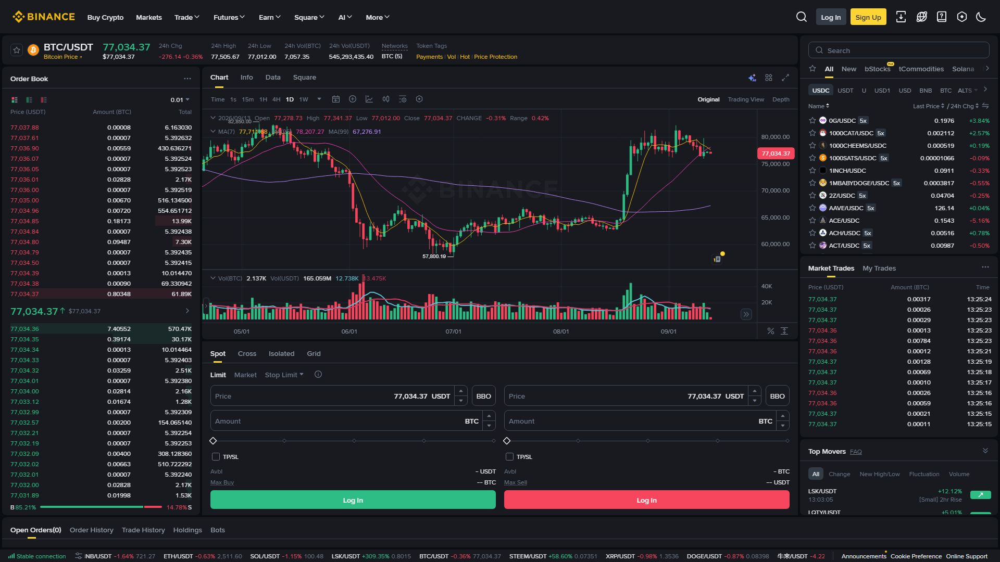

اسٹاپ لاس ایک ایسا آرڈر ہے جو پوزیشن کو خود بخود بند کر دیتا ہے جب قیمت ایک مقررہ حد سے آگے بڑھ جائے۔ یہ "پیشن گوئی" کا آلہ نہیں، بلکہ بقا کا آلہ ہے — یہ طے کرتا ہے کہ ایک غلط ٹریڈ آپ کا اکاؤنٹ نہیں اُجاڑے گی۔

آپ: BTC $96,000 پر خریدا
اسٹاپ لاس: $93,000 (≈ 3% نیچے)
اگر BTC $93,000 تک گرا → پوزیشن بند، نقصان ≈ $3,000🔴 یہ سوچنا خطرناک ہے: "اسٹاپ لگاؤں گا تو نقصان ہو جائے گا!" — حقیقت اُلٹ ہے۔ اسٹاپ وہ لگاتا ہے جو ایک چھوٹا نقصان قبول کر کے بڑے نقصان سے بچنا چاہتا ہے۔ بغیر اسٹاپ، -3% کی جگہ -50% بھی ہو سکتا ہے۔
اسٹاپ قیمت = خرید قیمت × (1 − فیصد)| برداشت | خرید قیمت | اسٹاپ قیمت | نقصان |
|---|---|---|---|
| 3% | $96,000 | $93,120 | $2,880 |
| 5% | $96,000 | $91,200 | $4,800 |
| 10% | $96,000 | $86,400 | $9,600 |
✅ سادہ اور تیز — نئے سیکھنے والوں کے لیے بہترین شروع۔ عام رہنمائی 3–5%، مگر یہ ہر ٹریڈر کی برداشت پر منحصر ہے — یہ کوئی مقدس قانون نہیں۔
چارٹ کی اہم سطح (سپورٹ) کے نیچے اسٹاپ لگانا — تاکہ معمولی اتار چڑھاؤ پوزیشن نہ بند کرے۔
| بنیاد | تفصیل |
|---|---|
| سپورٹ لیول | قیمت جہاں بار بار رُکی |
| Moving Average | 50 EMA / 200 EMA کے نیچے |
| Structure Break | حالیہ نچلی سطح کا ٹوٹنا |
BTC کا سپورٹ: $93,000
اسٹاپ: $92,700 (سپورٹ سے کچھ نیچے)
وجہ: اگر $93,000 واقعی ٹوٹے، تب ہی پوزیشن بند ہو💡 سپورٹ کے عین اوپر اسٹاپ لگانا عام غلطی ہے — چھوٹی سی چھلانگ آرڈر اُٹھا لے گی۔
ATR (Average True Range) = مارکیٹ کی اوسط روزانہ حرکت۔ زیادہ اتار چڑھاؤ والی منڈی میں اسٹاپ دور، سکون والی منڈی میں قریب۔
اسٹاپ فاصلہ = ATR × ضرب (مثلاً 2)✅ فائدہ: ایک ہی فیصد ہر کوائن پر نہیں لگتا — BTC اور کسی چھوٹے کوائن کے اتار چڑھاؤ مختلف ہوتے ہیں۔
BTC کا ATR (روزانہ): $2,500
ضرب: 2
اسٹاپ فاصلہ = 2,500 × 2 = $5,000
خرید $96,000 → اسٹاپ $91,000🔴 درست ترتیب: پہلے اسٹاپ متعین کریں، پھر رقم نکالیں — نہ کہ اُلٹ۔
خطرہ فی ٹریڈ = اکاؤنٹ کا 1% (بہت قدامت پسند حد)
مثال:
اکاؤنٹ: $5,000
خطرہ (1%): $50
اسٹاپ فاصلہ: 3% (خرید $96,000 → اسٹاپ $93,120)
پوزیشن کا حجم = 50 ÷ 0.03 = $1,666
یعنی آپ صرف $1,666 کی BTC خریدیں، پوری رقم کی نہیں!💡 اسی لیے کہا جاتا ہے: "اسٹاپ کا فاصلہ پوزیشن کا حجم طے کرتا ہے۔" دور اسٹاپ = چھوٹی پوزیشن۔ قریب اسٹاپ = بڑی پوزیشن۔
| پہلو | Stop-Limit | Stop-Market |
|---|---|---|
| عملدرآمد | Limit پر، پورا نہ ہو تو رُک جائے | فوراً مارکیٹ پر |
| slippage | ممکن نہیں | ممکن (تیز گراوٹ میں) |
| یقین | بند ہوگا؟ — ہو سکتا ہے نہ ہو | بند ہوگا، مگر قیمت بدل سکتی ہے |
⚠️ تیز گراوٹ (crash) میں Stop-Limit "بند ہی نہ ہونے" کے خطرے میں ہے؛ Stop-Market "غلط قیمت پر بند" کے خطرے میں۔ اپنی حکمت عملی کے مطابق چنیں۔
اسٹاپ لاس آپ کی ناکامی کا نشان نہیں، آپ کی پروفیشنل ازم کا ثبوت ہے۔ ہر بڑا سرمایہ کار چھوٹے نقصان قبول کرتا ہے تاکہ بڑا نقصان نہ ہو۔
یاد رکھیں: "ہر ٹریڈ پر اسٹاپ، اور اسٹاپ پر کبھی دوبارہ غور نہیں۔"